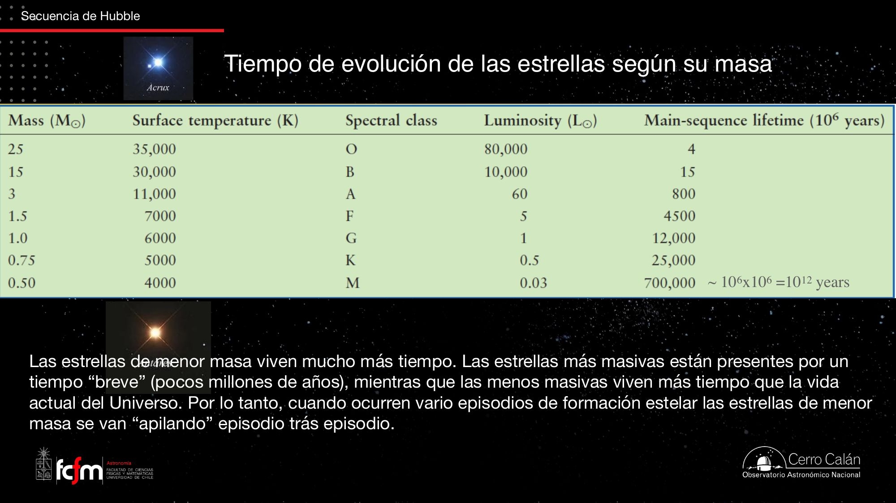
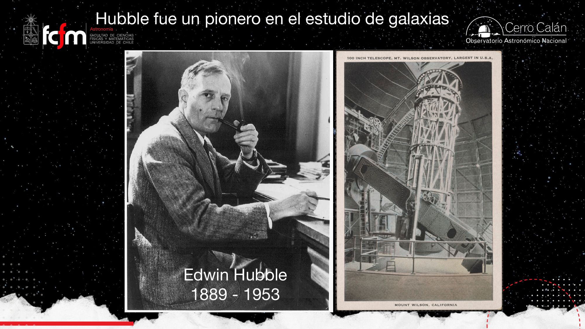
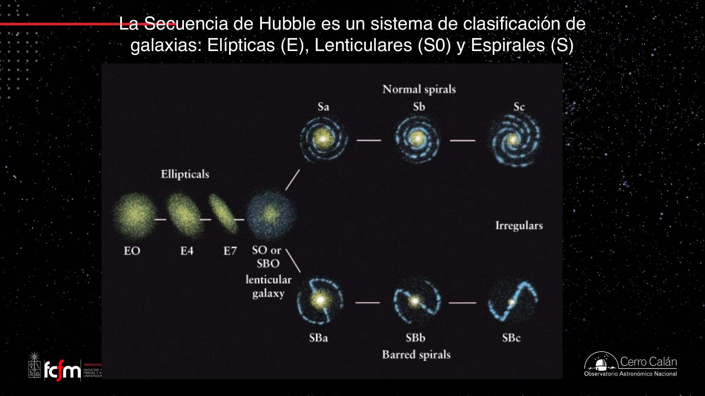
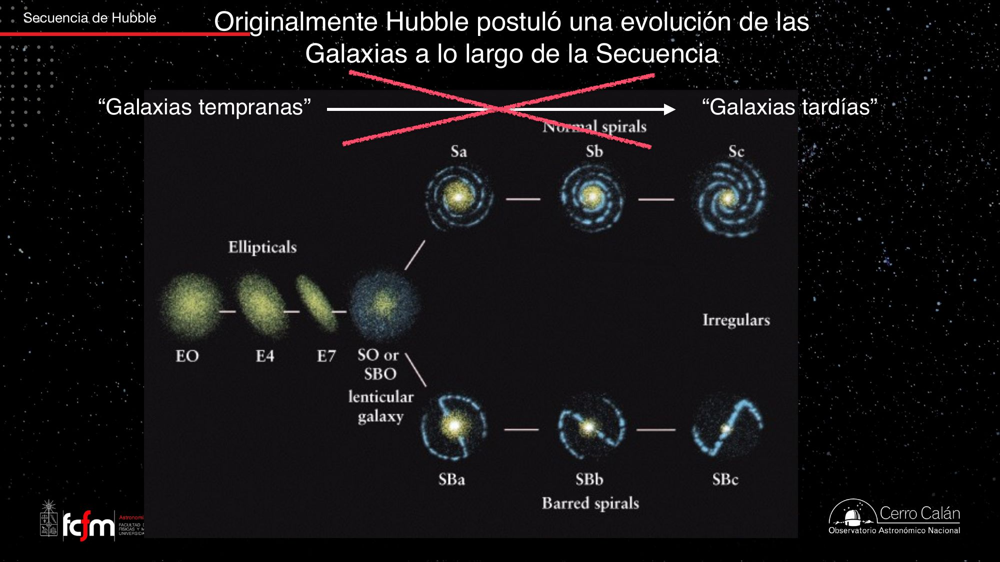
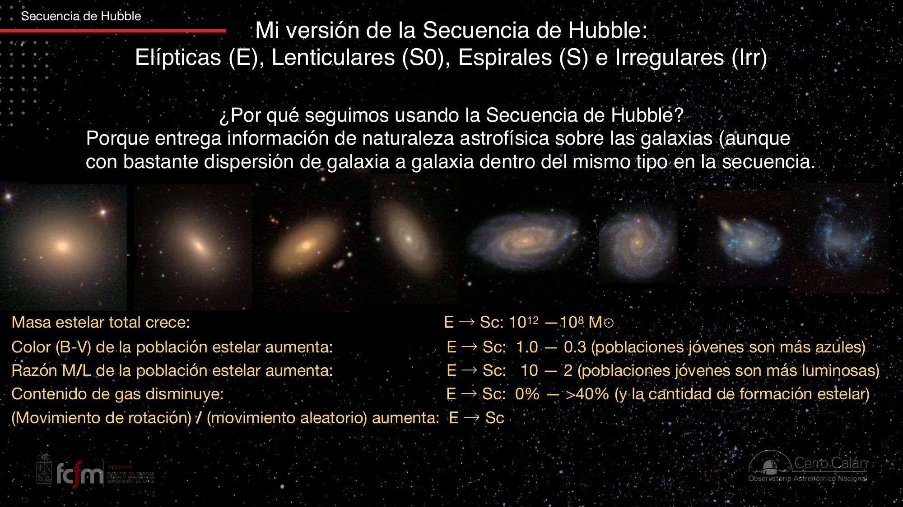
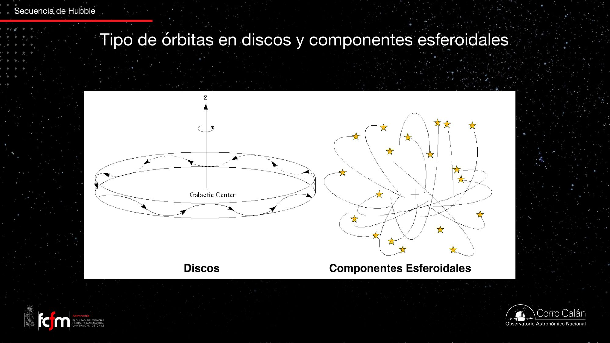
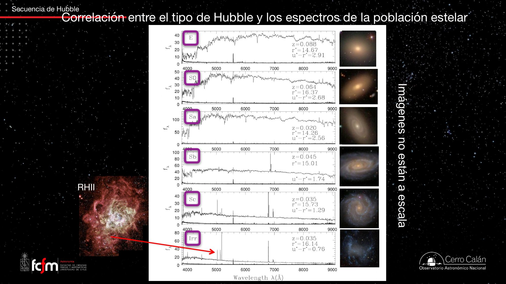
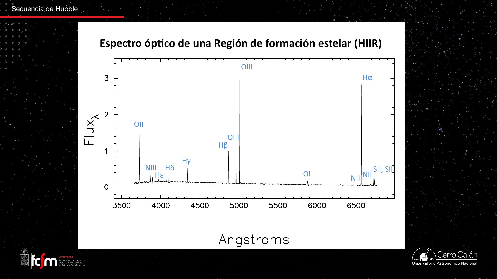
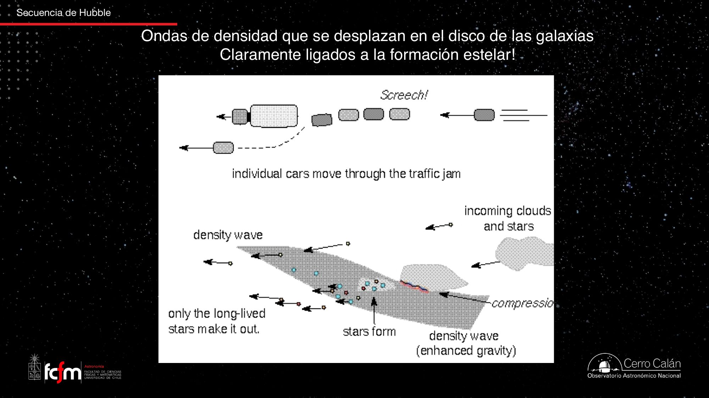
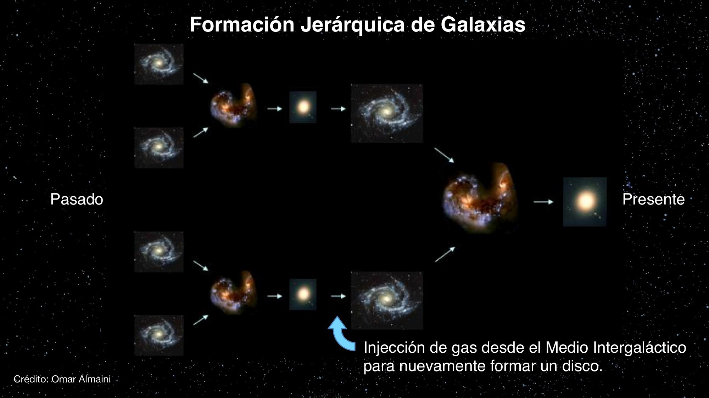

La secuencia de Hubble: clasificar para comprender
Hubble ordenó las galaxias por su apariencia — elípticas, lenticulares, espirales, irregulares — como quien hace botánica. Cien años después seguimos usando su diagrama, no porque su interpretación fuera correcta (no lo era), sino porque la posición en la secuencia encapsula masa, color, contenido de gas, formación estelar y hasta cómo se mueven las estrellas por dentro.
En las clases anteriores aprendimos de qué están hechas las galaxias y cómo se ven en distintas longitudes de onda. Hoy empezamos a hablar de las galaxias propiamente tales: qué tipos existen y en qué se diferencian. La herramienta central es la secuencia de Hubble, una clasificación morfológica que nació de mirar placas fotográficas hace un siglo. Para alguien de ingeniería, la lección profunda es sobre diseño de features: una buena variable de clasificación es la que se correlaciona con muchas otras propiedades del sistema. La posición en la secuencia de Hubble es exactamente eso — un solo "índice" que comprime cuatro órdenes de magnitud en masa, un factor 5 en razón masa-luminosidad, todo el rango de contenido de gas y dos regímenes dinámicos distintos.
Recapitulación: qué vemos cuando vemos galaxias
Estrellas compactas que dominan la emisión; medio interestelar difuso que parece envolverlo todo.
El profesor abre recapitulando las clases anteriores. Las estrellas son emisores muy parecidos a un cuerpo negro, con un rango relativamente limitado de temperaturas — y por lo tanto de longitudes de onda donde brillan, que coincide con el rango que nuestros ojos ven. Son los principales emisores de radiación de una galaxia, pero son objetos muy compactos: pequeños puntos de luz.
El medio interestelar (ISM), en cambio, es difuso y extendido. Por eso las imágenes en hidrógeno neutro (H I) — como la de M81 que vimos antes — impresionan: el gas parece envolver toda la galaxia. Pero es un efecto visual: el gas es una componente menor en masa para la mayoría de las galaxias; solo que, al estar desparramado, ocupa mucha área en la imagen. Según la longitud de onda que miremos, vemos cosas distintas: óptico → estrellas; radio/infrarrojo → gas frío y polvo; altas energías (rayos X, gamma) → gas extremadamente difuso y caliente.
Las diapositivas repasan dos hechos clave del diagrama Hertzsprung–Russell: (1) cada episodio de formación estelar puebla toda la secuencia principal, y (2) cuánto vive una estrella depende solo de su masa. Una estrella O de 25 M☉ vive ≈ 4 millones de años; una M de 0,5 M☉ vive ≈ 1012 años — más que la edad actual del universo. Consecuencia: las estrellas masivas, azules y luminosas solo existen donde hubo formación estelar reciente; las de baja masa se van "apilando" episodio tras episodio. Este reloj es la clave para leer los colores de las galaxias.

Los colores de una galaxia funcionan como el espectro de frecuencias de una señal con componentes de distinta vida media: las estrellas azules son un transiente rápido (aparecen y desaparecen en millones de años), las rojas son la componente DC acumulada. Ver "azul" en una galaxia es como ver actividad de alta frecuencia en un espectrograma: te dice que algo pasó hace poco.
Edwin Hubble y el nacimiento de la astronomía extragaláctica
De "motitas de luz" a sistemas externos como la Vía Láctea.
Edwin Hubble (1889–1953) dejó una impronta enorme: la secuencia de Hubble, la relación y la constante de Hubble, el telescopio espacial que lleva su nombre. Fue de las primeras personas en darse cuenta de que esas "motitas de luz" que se veían en el cielo no eran nebulosas de nuestra galaxia, sino galaxias completas — como la Vía Láctea, pero lejanas.

Hubble trabajó cuando se observaba poniendo el ojo al telescopio o con placas fotográficas, ambas sensibles al rango óptico. Por eso su clasificación es morfológica y óptica: describe esencialmente cómo se distribuyen las estrellas en cada galaxia. Su método fue casi de botánica: agrupar por apariencia, sin conocer aún la física de fondo. El conocimiento de qué era una galaxia era mínimo en esa época — y aun así el sistema sobrevivió un siglo.
El diagrama de diapasón: E, S0, S y SB
Elípticas a un lado, espirales (con y sin barra) al otro, lenticulares en el mango.

Elípticas (E0–E7): achatamiento medido con una elipse
Las galaxias elípticas tienen colores amarillentos-anaranjados y morfología esferoidal. Se subclasifican ajustando una elipse a su imagen y midiendo los semiejes mayor () y menor ():
Espirales (Sa/Sb/Sc): dos parámetros que van de la mano
Al otro lado están las galaxias con disco y brazos espirales, divididas en normales (S) y barradas (SB). Las letras a, b, c dependen de dos parámetros correlacionados:
- Prominencia del bulbo: el cociente de luminosidad bulbo/disco. Según las diapositivas: Sa ≈ 5–0,5 · Sb ≈ 1–0,1 · Sc ≈ 0,2–0. En una Sa el bulbo domina; en una Sc aporta casi nada (puede ser exactamente cero: galaxias sin bulbo).
- Enrollamiento de los brazos: el ángulo de apertura crece de Sa a Sc (Sa ≈ 0°–10° · Sb ≈ 5°–20° · Sc ≈ 10°–30°). En una Sa los brazos van muy pegados y enrollados; en una Sc son abiertos.
Lenticulares (S0): el eslabón del mango
Entre elípticas y espirales están las lenticulares (S0): galaxias que sí tienen un disco estelar pero no desarrollan brazos espirales. Comparten con las elípticas su bajo contenido de gas, y con las espirales la existencia del disco. Ante la pregunta de una estudiante — ¿cómo se distingue una S0 de una elíptica vista de lado? — el profesor responde: estudiando cómo se distribuye la luz, porque las estrellas de un disco se distribuyen de manera distinta que en un esferoide.
"Yo los dibujo así: una Sa tiene un bulbo grande con brazos bien enrollados; una Sc es puro disco con brazos abiertos." Y sobre las barras: los brazos pueden nacer directamente del bulbo (S), de una componente elongada central (SB), o incluso de un anillo conectado a la barra — la presencia de anillos suele ir de la mano de las barras.
"Tempranas" y "tardías": el error evolutivo de Hubble
Una interpretación equivocada cuyo vocabulario seguimos usando cien años después.
Hubble pensó que su diagrama era una secuencia evolutiva: que las galaxias nacían elípticas y terminaban espirales. Por eso llamó a las elípticas galaxias tempranas (early-type) y a las espirales galaxias tardías (late-type).

Cuando leas early-type galaxy en un paper, significa "elíptica o lenticular"; late-type significa "espiral o irregular". No implica nada sobre evolución temporal. El profesor lamenta que se siga usando: no solo es inapropiado, sino en muchos casos contrario a lo que hoy se sabe sobre cómo cambian morfológicamente las galaxias (lo veremos más adelante en el curso).
Barras, anillos y brazos: estructuras resonantes
Por qué la distinción S/SB dejó de considerarse fundamental.
Para Hubble, la división entre espirales barradas y no barradas era importante. Hoy no se considera una propiedad de importancia física para clasificar galaxias, por varias razones que dio la clase:
- La mayoría de las galaxias espirales — se piensa hoy — tienen barra, solo que muchas son poco prominentes y el ojo no las distingue (aparecen al modelar la imagen como una componente elongada). La propia Vía Láctea es barrada.
- La presencia de barra no dictamina nada de mayor trascendencia sobre las propiedades globales de la galaxia. En cambio, decir "es una Sa" o "es una Sc" sí encapsula mucha información.
¿Qué son entonces las barras y los brazos? Resonancias
Barras, anillos y brazos espirales tienen que ver con la dinámica interna del disco: con cómo las órbitas estelares presentan resonancias que dan lugar a estructuras macroscópicas de larga vida. El profesor lo explica con dos analogías muy de ingeniería:
El puente y el batallón: a un batallón se le ordena romper la marcha al cruzar un puente, porque todo sistema físico tiene frecuencias propias a las que "le gusta" oscilar. Si la excitación externa sincroniza con una de ellas, la respuesta crece sin control — puentes que hubo que cerrar recién inaugurados, edificios diseñados para evitar frecuencias presentes en el entorno. Es un problema clásico de diseño estructural.
Los troyanos de Júpiter: los asteroides troyanos se acumulan en ángulos precisos antes y después de Júpiter (los puntos que se pueden calcular algebraicamente donde "al sistema dinámicamente le gusta estar"). Brazos, anillos y barras son lo mismo a escala galáctica: estructuras resonantes de los discos.
¿Qué significa que "entren en resonancia"? Que son estructuras que se forman y persisten: tienen tiempos de vida muy largos y cambian lentamente. Sin resonancias, un disco sería "suavecito", sin estructura. Y nótese la conexión con la secuencia: hacia el lado elíptico no hay ni barras ni brazos — para que el disco muestre estas resonancias hace falta disco (y gas, que abunda justamente hacia el lado tardío de la secuencia).
La secuencia moderna: lineal y extendida a las irregulares
Sin la bifurcación S/SB, y con nuevos tipos más allá de Sc.
Si la barra no es fundamental, el diapasón se puede "aplanar" en una relación lineal. Además, Hubble solo llegó hasta las Sc; con el tiempo se descubrieron galaxias aún más "desparramadas": tipos Sd (bulbo casi ausente, galaxia casi completamente azul) y finalmente las irregulares (Irr), donde ni siquiera está claro dónde está el centro. La Gran Nube de Magallanes es un buen ejemplo: tiene algo de disco y de barra, pero es una cosa muy amorfa.

En estas imágenes de colores realistas se ve el patrón central de la clase: al ir de Sa hacia Sc e Irr, los colores azules van apareciendo hasta dominar. El azul delata estrellas recién formadas (sección 1): más a la derecha en la secuencia, más formación estelar en los discos. También se nota que, en promedio, el tamaño disminuye: una Sc o una irregular típica es mucho más pequeña y menos masiva que una elíptica gigante.
Propiedades que correlacionan con la secuencia
La razón por la que el sistema de Hubble sigue vivo: es un buen "feature".
De un extremo al otro de la secuencia (E → Sc) correlacionan, según las diapositivas y la clase:
| Propiedad | E → Sc | Comentario de la clase |
|---|---|---|
| Masa estelar total | 1012 → 108 M☉ | Cuatro órdenes de magnitud solo hasta Sc: si una galaxia tiene masa 1, otra tiene 10.000. |
| Color (B−V) | 1,0 → 0,3 | Poblaciones jóvenes son más azules. Ojo: la magnitud es el logaritmo del flujo, así que estos cambios son mucho mayores de lo que aparentan numéricamente. |
| Razón M/L | 10 → 2 | Cuánta masa hay por unidad de luminosidad en la población estelar. Las poblaciones jóvenes son mucho más luminosas por unidad de masa. |
| Contenido de gas | 0% → >40% | Y con él, la formación estelar. Las irregulares pueden llegar a ~80–90% de gas; la Vía Láctea tiene ~20% en ISM y ~80% en estrellas. |
| Rotación / mov. aleatorio | aumenta E → Sc | Cuánto material rota ordenadamente vs. cuánto se mueve al azar. Va de la mano de la razón bulbo/disco (sección 9). |
Por eso la secuencia sigue en uso: saber que una galaxia es "tipo Sc o Sd o irregular" ya te dice que es pequeña, con mucho gas y alta tasa de formación estelar. No lo dice todo — hay harta dispersión dentro de cada tipo — pero da una idea general inmediata. En cambio "con barra / sin barra" casi no agrega información.
En la jerga astronómica, las elípticas son "red and dead" — rojas y muertas. Muertas en el sentido de que no forman estrellas… simplemente porque no tienen gas, que es la materia prima. La cadena lógica de la clase: más gas → más formación estelar → más estrellas azules jóvenes → color más azul y edad estelar promedio más baja.
La secuencia de Hubble es una excelente reducción de dimensionalidad: un solo parámetro ordinal (la posición E→Irr) captura gran parte de la varianza de un espacio de propiedades multidimensional (masa, color, gas, dinámica…). Como una primera componente principal hecha "a ojo" en 1926. Su límite: la dispersión residual dentro de cada clase — el índice no es el estado completo del sistema.
Absoluto vs. fraccional: la analogía de las pecas
Dos ejes que se confunden: qué tipo de galaxia es, y cuán grande es.
La clase dedicó un buen rato a un punto sutil: dentro de cada tipo de Hubble hay galaxias pequeñas, intermedias y masivas, y muchas propiedades escalan con el tamaño además de variar a lo largo de la secuencia. El profesor lo resolvió con una analogía memorable:
Piensa en las galaxias como personas con pecas, donde las pecas son el gas. Un niño y un adulto igual de pecosos (misma densidad de pecas por cm²) no tienen la misma cantidad de pecas: el adulto tiene más porque tiene más piel. Las elípticas son los "poco pecosos" y las tardías los "muy pecosos" — pero dentro de cada grupo, la galaxia más grande siempre tiene más gas en términos absolutos.
Lo mismo con la formación estelar: una irregular azul diminuta tiene una tasa de formación estelar fraccionalmente altísima para su tamaño, pero en cantidad absoluta puede formar lo mismo que una espiral gigante donde la formación estelar casi no tiene impacto relativo. En números inventados de la clase: en una irregular puede estar involucrado en formar estrellas un ~20% de la masa; en una espiral masiva, un ~0,1% — y aun así la masiva puede ganar en valor absoluto. Los gráficos de la clase muestran cantidades absolutas, no fraccionales; por eso hay que leerlos con cuidado.
Consecuencia para la edad estelar promedio: si tomo un pedazo grande de galaxia y promedio la edad de sus estrellas, la formación reciente baja el promedio. Pero en una galaxia muy grande, el promedio también cuenta el enorme "stock" de estrellas viejas acumuladas — otra vez absoluto vs. relativo.
Es la diferencia entre una métrica extensiva y una intensiva (termodinámica), o entre el throughput total de un sistema y su throughput por unidad de recurso. Normalizar o no normalizar por tamaño cambia completamente el ranking — el mismo cuidado que hay que tener al comparar benchmarks de sistemas de distinta escala.
Dinámica interna: carrusel vs. enjambre
Dos tipos de movimiento sostienen a las galaxias contra su propia gravedad.
Recordemos el principio: lo que previene el colapso gravitacional es el movimiento (la energía cinética o "energía interna" del sistema). Este equilibrio opera en todas las escalas: en una región de gas de unos años luz (¿colapsa y forma estrellas o no?), en la galaxia completa, e incluso en un cúmulo de galaxias — si a todas las componentes "les dijéramos ¡paren!", todo caería hacia el centro. La formación estelar depende del equilibrio local de cada nube, no de cuánta energía cinética tenga la galaxia entera.
En las galaxias, ese movimiento viene en dos sabores, y la imagen del profesor es imbatible:
- Los discos rotan como un carrusel de feria: todas las estrellas dando vueltas ordenadas, en órbitas casi circulares, todas para el mismo lado. (El que rota es el disco, no los brazos — los brazos son estructuras que se forman en el disco.)
- Los bulbos y esferoides son como un enjambre de abejas: las estrellas se mueven en todas direcciones (típicamente con algo de rotación también, pero domina la componente aleatoria — la "dispersión de velocidades").

Lo que importa es la masa encerrada
Ante la pregunta de si las estrellas del bulbo orbitan el centro: dinámicamente, a un cuerpo lo que más le importa es el material que queda hacia adentro de su órbita. En un sistema perfectamente esférico y homogéneo esto es exacto (los teoremas de Newton: la cáscara exterior no ejerce fuerza neta); las galaxias no son perfectas, pero la aproximación domina. Como las galaxias son muy concentradas centralmente — la gran mayoría de la materia estelar está en la parte central — al pararse cada vez más afuera casi no se agrega masa encerrada. El profesor adelanta: esta idea es la base para entender cómo se determinó la presencia de materia oscura (lo veremos al estudiar cómo se mueven los objetos dentro de una galaxia).
¿Y el agujero negro central? Los agujeros negros supermasivos son insignificantes en masa comparados con todas las estrellas de la galaxia.
¿Órbitas caóticas en el bulbo? No: hay familias de órbitas (algunas "tipo tubo", como cornetas sobre cuya superficie se mueven las estrellas; otras pasan por el núcleo). El movimiento aleatorio no es caos, es una distribución de órbitas ordenadas con orientaciones diversas.
¿Chocan las estrellas? Prácticamente nunca: las galaxias son casi vacío — estrellas compactísimas separadas por distancias enormes. La luz "continua" de una galaxia es un problema de resolución: no distinguimos las estrellas individuales y su luz se traslapa. En dinámica, "choque" significa perturbación significativa de la órbita (un flyby), no colisión física; solo en núcleos galácticos y núcleos de cúmulos globulares la densidad estelar permite interacciones fuertes.
Lo que la clase llama "razón rotación/aleatorio" se formaliza como : velocidad de rotación ordenada sobre dispersión de velocidades. Un disco frío tiene ; un esferoide "caliente" dinámicamente, . Ambos aportan al soporte contra la gravedad; solo difiere el orden del movimiento. (Notación no usada explícitamente en la clase.)
Espectros a lo largo de la secuencia
Otra forma de "ver" la secuencia: tomar el espectro óptico de cada tipo.
Además de la morfología, podemos tomar un espectro de la galaxia (o de su parte central) y ver cómo cambia de E a Irr:

- Elíptica (E): espectro con curvatura de cuerpo negro no particularmente caliente y líneas de absorción típicas de estrellas viejas. Sin líneas de emisión: no hay ISM ni formación estelar. Una S0 no es tan distinta.
- Sa: todavía poca formación estelar, pero el continuo empieza a aplanarse — se van "metiendo" estrellas en promedio más jóvenes (recordar: cada estrella es un cuerpo negro; la suma cambia de forma).
- Sb: aparecen claramente las líneas de emisión de las regiones H II — hidrógeno ionizado por estrellas recién nacidas — que ya estudiamos. Diagnóstico directo de formación estelar.
- Sc / Irr: continuo derechamente muy azul y líneas de emisión prominentísimas. Aún se alcanzan a ver absorciones estelares: el continuo viene de las fotósferas de las estrellas.

Una estudiante notó que los espectros de tipos tardíos "se ven más bajos". Es un efecto de graficación: para mostrar lo prominentes que son las líneas de emisión, el continuo queda comprimido hacia abajo. Si se recortaran las líneas, se vería la estructura del continuo con sus absorciones estelares. La clase quedó en el "gancho" de la pregunta ¿por qué una galaxia con formación estelar es más azul? justo antes de la pausa.
Más allá del diapasón
Temas presentes en las diapositivas de la clase (la transcripción disponible llega hasta la pausa).
La transcripción disponible cubre hasta la pausa de la clase (~1h 23m). Lo que sigue resume las diapositivas restantes del PDF de la clase (láminas 16–26), que muy probablemente se discutieron en la segunda parte. Se presenta como contenido de diapositivas, no como palabras textuales del profesor.
Problemas de la clasificación de Hubble (lámina 16)
- No todos sus parámetros reflejan propiedades físicas (la barra, el número de las E).
- Depende de la orientación y de efectos de proyección: la elipticidad aparente de una E cambia según el ángulo de visión; una espiral de canto no muestra la estructura del disco.
- Es subjetiva (depende de quién clasifica), cambia con la longitud de onda y la profundidad de las imágenes, y no contiene todos los tipos de galaxias existentes.
Galaxias fuera de la secuencia (lámina 17)
| Tipo | Descripción |
|---|---|
| Enanas | Irregulares (Irr–dIrr, 10²–10³ veces menos brillantes que la Vía Láctea) y enanas elípticas/esferoidales (dE, dSph, hasta 10⁶ veces menos brillantes). |
| Supergigantes cD | En los centros de los cúmulos de galaxias. |
| Bajo brillo superficial (LSB) | Galaxias tenues, típicamente pequeñas. |
| Activas (AGN) | Núcleos dominados por emisión no estelar (ej.: 3C273). |
| Interactuantes | "Mergers", galaxias en proceso de fusión (ej.: las Antenas). |
¿Qué son los brazos espirales? Ondas de densidad (láminas 18–19)
Si los brazos fueran "materiales" (siempre las mismas estrellas), la rotación diferencial — las estrellas interiores tardan menos en dar la vuelta — los enrollaría por completo en unos cientos de millones de años, y en 15.000 millones de años no quedaría nada reconocible. Como los observamos, deben ser otra cosa: ondas de densidad que se desplazan por el disco. La analogía de la diapositiva: un taco de tráfico — los autos individuales (estrellas y nubes) entran y salen del taco, pero el taco (el brazo) persiste. La compresión del gas al entrar a la onda dispara formación estelar: por eso los brazos brillan azules; solo las estrellas longevas "sobreviven" para salir del brazo.

Espirales vs. elípticas en imágenes multibanda (láminas 20–22)
La galaxia Whirlpool (M51) vista en UV, óptico e infrarrojo cercano: en el UV los brazos aparecen destacados y fragmentados (estrellas masivas de vida corta que ionizan su entorno; su compañera NGC 5195 casi desaparece); en el IR cercano los brazos y el disco se ven suaves y continuos (estrellas de baja masa, distribuidas homogéneamente). Los discos espirales tienen cantidades significativas de gas — el gas molecular frío es donde ocurre la formación estelar — y al morir las estrellas devuelven ~30–40% de su gas enriquecido al ISM. Las elípticas, en cambio, son "globos de estrellas" con poco o nada de ISM.
Fusiones y formación jerárquica (láminas 23–26)
Pero no todo es tan tranquilo como parece: hay elípticas con cáscaras y estructuras que delatan interacciones pasadas, y pares de galaxias deformándose mutuamente. Las fusiones galácticas observadas por el Hubble se comparan con simulaciones computacionales (Springel & White) que reproducen colas de marea y puentes. La lámina final adelanta el paradigma moderno de formación jerárquica: espirales que se fusionan → remanente elíptico → puede volver a formar un disco si se inyecta gas desde el medio intergaláctico → nuevas fusiones… La morfología no es un destino fijo sino un estado en una historia — exactamente lo contrario de la flecha evolutiva de Hubble.

Explorar conceptos
Tres widgets para jugar con las ideas de la clase.
Conceptos clave
Tabla de repaso rápido.
| Concepto | Qué es / valor | Por qué importa |
|---|---|---|
| Secuencia de Hubble | Clasificación morfológica óptica: E → S0 → S/SB → (Irr) | Un solo índice que correlaciona con masa, color, gas, dinámica |
| Diagrama de diapasón | Mango (E, S0) + dos ramas (S y SB) | La forma original del sistema de Hubble |
| Clase En | , con a y b semiejes de la elipse aparente | Achatamiento de las elípticas; solo se observa E0–E7 |
| Sa / Sb / Sc | Bulbo/disco: ~5–0,5 / ~1–0,1 / ~0,2–0 · apertura de brazos: 0–10° / 5–20° / 10–30° | Los dos parámetros (correlacionados) de las espirales |
| Lenticular (S0) | Disco estelar sin brazos espirales, poco gas | Eslabón entre elípticas y espirales |
| Temprana / tardía | Jerga heredada del error evolutivo de Hubble | Se sigue usando; no implica evolución real |
| Barra galáctica | Componente estelar elongada central; la mayoría de las espirales tiene una (la Vía Láctea incluida) | No es una propiedad físicamente determinante |
| Resonancia | Sincronización entre frecuencias propias del disco y perturbaciones | Origen dinámico de barras, anillos y brazos; estructuras de larga vida |
| Masa estelar en la secuencia | 1012 → 108 M☉ (E → Sc) | Cuatro órdenes de magnitud |
| Color B−V | 1,0 (E) → 0,3 (Sc); escala logarítmica (magnitudes) | Azul = formación estelar reciente |
| Razón M/L | 10 (E) → 2 (Sc) | Poblaciones jóvenes son más luminosas por unidad de masa |
| Contenido de gas | ≈0% (E) → >40% (Sc); Irr hasta ~80–90%; Vía Láctea ~20% | Materia prima de la formación estelar |
| Red and dead | Apodo de las elípticas | Sin gas → sin formación estelar → rojas |
| Rotación vs. dispersión | Disco = carrusel; bulbo/esferoide = enjambre | Dos formas de soporte contra la gravedad; crece E → Sc |
| Teoremas de Newton | En un sistema esférico homogéneo, solo importa la masa encerrada | Base para medir masas — y descubrir la materia oscura |
| Choque (dinámica) | Perturbación orbital significativa (flyby), no colisión física | Las estrellas casi nunca interactúan; galaxias ≈ vacío |
| Espectros en la secuencia | E: absorciones de estrellas viejas → Irr: continuo azul + emisión de H II | La secuencia también se ve espectroscópicamente |
| Región H II | Hidrógeno ionizado por estrellas recién nacidas; líneas de emisión | Diagnóstico directo de formación estelar |
| Onda de densidad | Los brazos como "taco de tráfico" que persiste (diapositivas) | Resuelve el problema del enrollamiento por rotación diferencial |
| Formación jerárquica | Fusiones sucesivas + reinyección de gas (diapositivas) | La visión moderna, opuesta a la flecha de Hubble |
Exámenes de práctica
10 exámenes de 5 preguntas (3 de alternativas autocorregibles + 2 de respuesta escrita).
- Examen 01Hubble y el diapasón
- Examen 02Elípticas y lenticulares
- Examen 03Espirales: bulbo, disco y brazos
- Examen 04Barras y resonancias
- Examen 05Propiedades correlacionadas
- Examen 06Gas, formación estelar y escalas
- Examen 07Dinámica interna
- Examen 08Espectros y poblaciones
- Examen 09Más allá del diapasón
- Examen 10Integrador